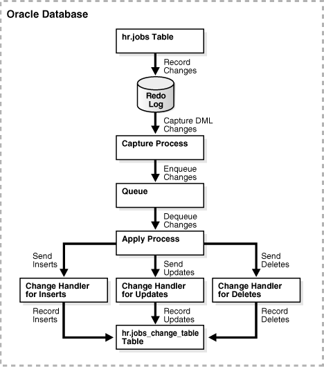
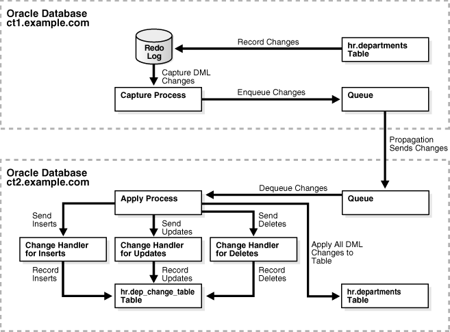
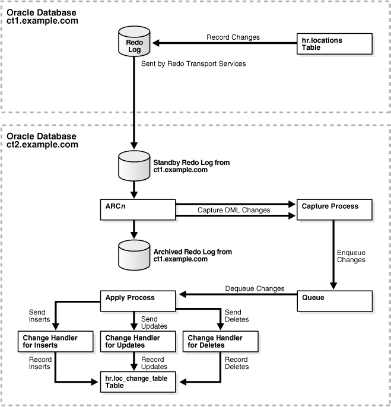
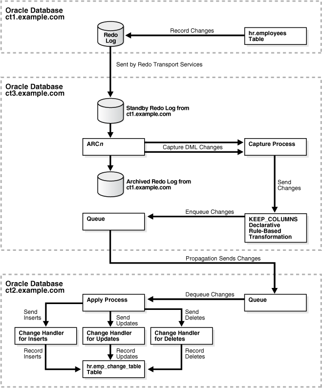

20 Using Oracle Streams to Record Table Changes
This chapter describes using Oracle Streams to record data manipulation language (DML) changes made to tables.
This chapter contains these topics:
20.1 About Using Oracle Streams to Record Changes to Tables
Oracle Streams can record information about the changes made to database tables, including information about inserts, updates, and deletes. The table for which changes are recorded is called the source table, and the information about the recorded changes is stored in another table called the change table. Also, the database that contains the source table is called the source database, while the database that contains the change table is called the destination database. The destination database can be the same database as the source database, or it can be a different database.
The recorded information describes the data that was changed in each row because of a DML operation, and metadata about each change. Typically, data warehouse environments record information about table changes, but other types of environments might track table changes as well.
To record table changes in a change table, an Oracle Stream apply process uses a change handler. A change handler is a special type of statement DML handler that tracks table changes and was created by either the DBMS_STREAMS_ADM.MAINTAIN_CHANGE_TABLE procedure or the DBMS_APPLY_ADM.SET_CHANGE_HANDLER procedure. This chapter describes using these procedures to create and manage change handlers. Information about change handlers is stored in the ALL_APPLY_CHANGE_HANDLERS and DBA_APPLY_CHANGE_HANDLERS views.
Note:
It is possible to create a statement DML handler that tracks table changes without using the change handler procedures. Such statement DML handlers are not technically considered change handlers, and information about them is not stored in the ALL_APPLY_CHANGE_HANDLERS and DBA_APPLY_CHANGE_HANDLERS views.
20.2 Preparing for an Oracle Streams Environment That Records Table Changes
The MAINTAIN_CHANGE_TABLE procedure in the DBMS_STREAMS_ADM package can configure an Oracle Streams environment that records changes to a source table. This procedure configures all of the required Oracle Streams components. This procedure also enables you to identify the metadata to record for each change. For example, you can choose to record the username of the user who made the change and the time when the change was made, as well as many other types of metadata.
Before you use the MAINTAIN_CHANGE_TABLE procedure to configure an Oracle Stream environment that records the changes to a table, you have decisions to make and prerequisites to complete.
The following sections describe the decisions and prerequisites for the MAINTAIN_CHANGE_TABLE procedure:
20.2.1 Decisions to Make Before Running the MAINTAIN_CHANGE_TABLE Procedure
The following sections describe the decisions to make before running the MAINTAIN_CHANGE_TABLE procedure:
20.2.1.1 Decide Which Type of Environment to Configure
An Oracle Streams environment that records table changes has the following components:
-
A capture process captures information about changes to the source table from the redo log. The capture process encapsulates the information for each row change in a row logical change record (row LCR). The database where the changes originated is called the source database. The database that contains the capture process is called the capture database.
-
If the source table and change table are on different databases, then a propagation sends the captured row LCRs to the database that contains the change table. The propagation is not needed if the source table and change table are in the same database.
-
An apply process records the information in the change table. The apply process uses statement DML handlers to insert the information in the row LCRs into the change table.
You can configure these components in the following ways:
-
Local capture and apply on one database: The source table, capture process, apply process, and change table are all in the same database. This option is the easiest to configure and maintain because all of the components are contained in one database.
-
Local capture and remote apply: The source table and capture process are in one database, and the apply process and change table are in another database. A propagation sends row LCRs from the source database to the destination database. This option is best when you want easy configuration and maintenance and when the source table and change table must reside in different databases.
-
Downstream capture and local apply: The source table is in one database, and the capture process, apply process, and change table are in another database. This option is best when you want to optimize the performance of the database with the source table and want to offload change capture to another database. With this option, most of the components run on the database with the change table.
-
Downstream capture and remote apply: The source table is in one database, the apply process and change table are in another database, and the capture process is in a third database. This option is best when you want to optimize the performance of both the database with the source table and the database with the change table. With this option, the capture process runs on a third database, and a propagation sends row LCRs from the capture database to the destination database.
The capture database is always the database on which the MAINTAIN_CHANGE_TABLE procedure is run. Table 20-1 describes where to run the procedure to configure each type of environment.
Table 20-1 Configuration Options for MAINTAIN_CHANGE_TABLE
| Type of Environment | Where to Run MAINTAIN_CHANGE_TABLE |
|---|---|
|
Local capture and apply on one database |
On the source database that contains the source table |
|
Local capture and remote apply |
On the source database that contains the source table |
|
Downstream capture and local apply |
On the destination database that does not contain the source table but will contain the change table |
|
Downstream capture and remote apply |
On a third database that does not contain the source table and will not contain the change table |
Additional requirements must be met to configure downstream capture. See "Operational Requirements for Downstream Capture" for information.
If you decide to configure a downstream capture process, then you must decide which type of downstream capture process you want to configure. The following types are available:
-
A real-time downstream capture process configuration means that redo transport services at the source database sends redo data to the downstream database, and a remote file server process (RFS) at the downstream database receives the redo data over the network and stores the redo data in the standby redo log.
-
An archived-log downstream capture process configuration means that archived redo log files from the source database are copied to the downstream database, and the capture process captures changes in these archived redo log files. These log files can be transferred automatically using redo transport services, or they can be transferred manually using a method such as FTP.
The advantage of real-time downstream capture over archived-log downstream capture is that real-time downstream capture reduces the amount of time required to capture changes made at the source database. The time is reduced because the real-time downstream capture process does not need to wait for the redo log file to be archived before it can capture changes from it. You can configure more than one real-time downstream capture process that captures changes from the same source database, but you cannot configure real-time downstream capture for multiple source databases at one downstream database.
The advantage of archived-log downstream capture over real-time downstream capture is that archived-log downstream capture allows downstream capture processes for multiple source databases at a downstream database. You can copy redo log files from multiple source databases to a single downstream database and configure multiple archived-log downstream capture processes to capture changes in these redo log files.
20.2.1.2 Decide Which Columns to Track
The column_type_list parameter in the MAINTAIN_CHANGE_TABLE procedure enables you to specify which columns to track in the change table. The Oracle Streams environment records changes for the listed columns only. To track all of the columns in the table, list all of the columns in this parameter. To track a subset of columns, list the columns to track. In the column_type_list parameter, you can specify the data type of the column and any valid column properties, such as inline constraint specifications.
You might choose to omit columns from the list for various reasons. For example, some columns might contain sensitive information, such as salary data, that you do not want to populate in the change table. Or, the table might contain hundreds of columns, and you might be interested in tracking only a small number of them.
20.2.1.3 Decide Which Metadata to Record
The extra_column_list parameter in the MAINTAIN_CHANGE_TABLE procedure enables you to specify which metadata to record in the change table. The following types of metadata can be listed in this parameter:
-
value_type -
source_database_name -
command_type -
object_owner -
object_name -
tag -
transaction_id -
scn -
commit_scn -
commit_time -
position -
compatible -
instance_number -
message_number -
row_text -
row_id -
serial# -
session# -
source_time -
thread# -
tx_name -
username
In the change table, a dollar sign ($) is appended to the column name for each metadata attribute. For example, the metadata for the command_type attribute is stored in the command_type$ column in the change table.
All of these metadata attributes, except for value_type and message_number, are row LCR attributes that can be stored in row LCRs.
The value_type$ column in the change table contains either OLD or NEW, depending on whether the column value is the original column value or the new column value, respectively.
The message_number$ column in the change table contains the identification number of each row LCR within a transaction. The message number increases incrementally for each row LCR within a transaction and shows the order of the row LCRs within a transaction.
Note:
LCR position is commonly used in XStream configurations.
See Also:
20.2.1.4 Decide Which Values to Track for Update Operations
The capture_values parameter in the MAINTAIN_CHANGE_TABLE procedure enables you to specify the values to record in the change table for update operations on the source table. When an update operation is performed on a row, the old value for each column is the value before the update operation and the new value is the value after the update operation. You can choose to record old values, new values, or both old and new values.
20.2.1.5 Decide Whether to Configure a KEEP_COLUMNS Transformation
The keep_change_columns_only parameter in the MAINTAIN_CHANGE_TABLE procedure enables you to specify whether to configure a KEEP_COLUMNS declarative rule-based transformation. The KEEP_COLUMNS declarative rule-based transformation keeps the list of columns specified in the column_type_list parameter in a row LCR. The transformation removes columns that are not in the list from the row LCR.
For example, suppose a table has ten columns, but only three of these columns need to be tracked in a change table. In this case, it is usually more efficient to configure one KEEP_COLUMNS declarative rule-based transformation that keeps the three columns that must be tracked than to configure seven DELETE_COLUMN declarative rule-based transformations that remove the seven columns that should not be tracked.
The keep_change_columns_only parameter is relevant only if you specify a subset of the table columns in the column_type_list parameter. In this case, you might choose to configure the transformation to reduce the amount of information sent over the network or to eliminate sensitive information from row LCRs.
Set the keep_change_columns_only parameter to FALSE when information about columns that are not included in the column_type_list parameter is needed at the destination database. For example, if the execute_lcr parameter is set to TRUE and the configuration will replicate all of the columns in a source table, but the column_type_list parameter includes a subset of these columns, then set the keep_change_columns_only parameter to FALSE.
20.2.1.6 Decide Whether to Specify CREATE TABLE Options for the Change Table
The options_string parameter in the MAINTAIN_CHANGE_TABLE procedure enables you to append a string of options to the CREATE TABLE statement that creates the change table. The string is appended to the generated CREATE TABLE statement after the closing parenthesis that defines the columns of the table. The string must be syntactically correct. For example, you can specify a TABLESPACE clause to store the table in a specific tablespace. You can also partition the change table. The advantage of partitioning a change table is that you can truncate a partition using the TRUNCATE PARTITION clause of an ALTER TABLE statement instead of deleting rows with a DELETE statement.
See Also:
Oracle Database SQL Language Reference for information about CREATE TABLE options
20.2.1.7 Decide Whether to Perform the Configuration Actions Directly or with a Script
The MAINTAIN_CHANGE_TABLE procedure can configure the Oracle Streams environment directly, or it can generate a script that configures the environment. Using the procedure to configure directly is simpler than running a script, and the environment is configured immediately. However, you might choose to generate a script for the following reasons:
-
You want to review the actions performed by the procedure before configuring the environment.
-
You want to modify the script to customize the configuration.
For example, you might want an apply process to use apply handlers for customized processing of the changes before applying these changes. In this case, you can use the procedure to generate a script and modify the script to add the apply handlers.
The perform_actions parameter controls whether the procedure configures the environment directly:
-
To configure the environment directly when you run the
MAINTAIN_CHANGE_TABLEprocedure, set theperform_actionsparameter toTRUE. The default value for this parameter isTRUE. -
To generate a configuration script when you run the
MAINTAIN_CHANGE_TABLEprocedure, set theperform_actionsparameter toFALSE, and use thescript_nameandscript_directory_objectparameters to specify the name and location of the configuration script.
20.2.1.8 Decide Whether to Replicate the Source Table
In addition to a change table, some environments require that the source table is replicated at the destination database. In this case, the source table is on a different database than the change table, and an additional replica of the source table is in the same database as the change table.
For example, consider an Oracle Streams environment that records the changes made the hr.employees table. Assume that the change table is named hr.emp_change_table and that the source table and the change table are on different databases. In this case, the following tables are involved in an Oracle Streams environment that records changes to the hr.employees table.
-
hr.employeestable in database 1 -
hr.emp_change_tablein database 2
The apply process at the destination database has a separate change handler that records changes for each type of operation (insert, update, and delete).
If the Oracle Streams environment also replicates the hr.employees table at database 2, then the following tables are involved:
-
hr.employeestable in database 1 -
hr.employeestable (replica) in database 2 -
hr.emp_change_tablein database 2
In an environment that replicates the table in addition to recording its changes, an additional change handler is added to the apply process at the destination database for each type of operation (insert, update, and delete). These change handlers execute the row LCRs to apply their changes to the replicated table.
The execute_lcr parameter controls whether the procedure configures replication of the source table:
-
To configure an Oracle Streams environment that replicates the source table, set the
execute_lcrparameter toTRUE. -
To configure an Oracle Streams environment that does not replicate the source table, set the
execute_lcrparameter toFALSE. The default value for this parameter isFALSE.
Note:
When the keep_change_columns_only parameter is set to TRUE and the column_list parameter includes a subset of the columns in the source table, the execute_lcr parameter must be set to FALSE. Apply errors will result if the row LCRs do not contain the column values required to replicate changes.
20.2.2 Prerequisites for the MAINTAIN_CHANGE _TABLE Procedure
The DBMS_STREAMS_ADM package includes procedures that configure replication environments, such as MAINTAIN_GLOBAL, MAINTAIN_SCHEMAS, and MAINTAIN_TABLES. Using the MAINTAIN_CHANGE_TABLE procedure is similar to using these other procedures, and many of the prerequisites are the same.
The following sections describe the prerequisites to complete before running the MAINTAIN_CHANGE_TABLE procedure:
-
Set Initialization Parameters That Are Relevant to Oracle Streams
-
Configure Log File Transfer to a Downstream Capture Database
-
Configure Standby Redo Logs for Real-Time Downstream Capture
-
Configure the Required Directory Object If You Are Using a Script
Many of these prerequisites are described in detail in Oracle Streams Replication Administrator's Guide.
20.2.2.1 Configure an Oracle Streams Administrator on All Databases
Each database in the environment must have an Oracle Streams administrator to configure and manage the Oracle Streams components. See Oracle Streams Replication Administrator's Guide for more information.
20.2.2.2 Configure Network Connectivity and Database Links
Depending on the type of Oracle Streams environment you plan to configure, network connectivity and one or more database links might be required. If the environment will include more than one database, then network connectivity between the databases in the environment is required.
The following database links are required for each type of Oracle Streams environment:
-
Local capture and apply on one database: No database links are required.
-
Local capture and remote apply: A database link from the source database to the destination database is required.
-
Downstream capture and local apply: The following database links are required:
-
A database link from the source database to the destination database
-
A database link from the destination database to the source database
-
-
Downstream capture and remote apply: The following database links are required:
-
A database link from the source database to the destination database
-
A database link from the source database to the capture database
-
A database link from the capture database to the source database
-
A database link from the capture database to the destination database
-
See Oracle Streams Replication Administrator's Guide for more information.
20.2.2.3 Ensure That the Source Database Is in ARCHIVELOG Mode
The source database that contains the source table must be in ARCHIVELOG mode because an Oracle Streams capture process scans the redo log to capture changes. If you plan to configure a downstream capture process, then the capture database also must be in ARCHIVELOG mode. See Oracle Database Administrator's Guide for more information.
20.2.2.4 Set Initialization Parameters That Are Relevant to Oracle Streams
Some initialization parameters are important for the configuration, operation, reliability, and performance of an Oracle Streams environment. Set these parameters appropriately for your Oracle Streams environment. See Oracle Streams Replication Administrator's Guide for more information.
20.2.2.5 Configure the Oracle Streams Pool
The Oracle Streams pool is a portion of memory in the System Global Area (SGA) that is used by Oracle Streams. Configure your database memory so that there is enough space available in the Oracle Streams pool. See Oracle Streams Replication Administrator's Guide for more information.
20.2.2.6 Configure Log File Transfer to a Downstream Capture Database
If you decided to use a local capture process at the source database, then log file transfer is not required. However, if you decided to use downstream capture that uses redo transport services to transfer archived redo log files to the downstream database automatically, then configure log file transfer from the source database to the capture database before configuring the Oracle Streams environment. See Oracle Streams Replication Administrator's Guide for more information.
See Also:
20.2.2.7 Configure Standby Redo Logs for Real-Time Downstream Capture
If you decided to use a real-time downstream capture process, then you must configure standby redo logs at the capture database. See Oracle Streams Replication Administrator's Guide for more information.
See Also:
20.2.2.8 Configure the Required Directory Object If You Are Using a Script
If you decided to generate a script with the MAINTAIN_CHANGE_TABLE procedure and configure the Oracle Streams environment with the script, then create the directory object that will store the script in the capture database. The capture database is the database on which you will run the procedure. This directory object is not required if you are not generating a script.
A directory object is similar to an alias for a directory on a file system. Each directory object must be created using the SQL statement CREATE DIRECTORY, and the user who invokes the MAINTAIN_CHANGE_TABLE procedure must have READ and WRITE privilege on the directory object.
For example, the following statement creates a directory object named db_files_directory that corresponds to the /usr/db_files directory:
CREATE DIRECTORY db_files_directory AS '/usr/db_files';
The user who creates the directory object automatically has READ and WRITE privilege on the directory object. When you are configuring an Oracle Streams replication environment, typically the Oracle Streams administrator creates the directory object.
20.2.2.9 Instantiate the Source Table at the Destination Database
If you decided to replicate the source table, then instantiate the source table at the destination database. Instantiation is not required if you decided not to replicate the source table.
If instantiation is required because you decided to replicate the source table, then complete the following steps before running the MAINTAIN_CHANGE_TABLE procedure:
-
Prepare the source table for instantiation.
-
Ensure that the source table and the replica table are consistent.
-
Set the instantiation SCN for the replica table at the destination database.
See Also:
-
Oracle Streams Replication Administrator's Guide for instantiation instructions
20.3 Configuring an Oracle Streams Environment That Records Table Changes
This section uses examples to illustrate how to configure an Oracle Streams environment that records table changes. Specifically, this section illustrates the four types of Oracle Streams environments that record table changes.
This section includes the following examples:
20.3.1 Recording Table Changes Using Local Capture and Apply on One Database
This example illustrates how to record the changes to a table using local capture and apply on one database. Specifically, this example records the changes made to the hr.jobs table.
The following table lists the decisions that were made about the Oracle Streams environment configured in this example.
| Decision | Assumption for This Example |
|---|---|
|
This example configures local capture and apply on one database. |
|
|
This example tracks all of the columns in the |
|
|
This example records the |
|
|
This example tracks both the old and new column values when an update is performed on the source table. |
|
|
This example does not configure a |
|
|
Decide Whether to Specify CREATE TABLE Options for the Change Table |
This example does not specify any |
|
Decide Whether to Perform the Configuration Actions Directly or with a Script |
This example performs the configuration actions directly. It does not use a script. |
|
This example does not replicate the source table. |
Figure 20-1 provides an overview of the Oracle Stream environment created in this example.
Figure 20-1 Recording Changes Using Local Capture and Apply on One Database
Description of "Figure 20-1 Recording Changes Using Local Capture and Apply on One Database"
Complete the following steps to configure an Oracle Streams environment that records the changes to a table using local capture and apply on one database:
The resulting Oracle Streams environment has the following characteristics:
-
An unconditional supplemental log group includes all of the columns in the
hr.jobstable. -
The database has an
hr.jobs_change_table. This change table has the following definition:Name Null? Type ----------------------------------------- -------- --------------------------- COMMAND_TYPE$ VARCHAR2(10) VALUE_TYPE$ VARCHAR2(3) COMMIT_SCN$ NUMBER JOB_ID VARCHAR2(10) JOB_TITLE VARCHAR2(35) MIN_SALARY NUMBER(6) MAX_SALARY NUMBER(6)
-
The database has a queue with a system-generated name. This queue is used by the capture process and apply process.
-
A capture process with a system-generated name captures data manipulation language (DML) changes made to the
hr.jobstable. -
An apply process with a system-generated name. The apply process uses change handlers with system-generated names to process the captured row LCRs for inserts, updates, and deletes on the
hr.jobstable. The change handlers use the information in the row LCRs to populate thehr.jobs_change_table.
See Also:
"Monitoring a Change Table" for an example that makes changes to the hr.jobs table and then queries the hr.jobs_change_table to verify change tracking
20.3.2 Recording Table Changes Using Local Capture and Remote Apply with Replication
This example illustrates how to record the changes to a table using local capture and remote apply. In addition to recording table changes, the Oracle Stream environment configured by this example also replicates the changes made to the table.
Specifically, this example records the changes made to a subset of columns in the hr.departments table. This example also replicates data manipulation language (DML) changes made to all of the columns in the hr.departments table. The Oracle Streams environment configured in this example captures the changes on the source database ct1.example.com and sends the changes to the destination database ct2.example.com. An apply process on ct2.example.com records the changes in a change table and applies the changes to the replica hr.departments table.
The following table lists the decisions that were made about the Oracle Streams environment configured in this example.
| Decision | Assumption for This Example |
|---|---|
|
This example configures local capture and remote apply using two databases: the source database is |
|
|
This example tracks the |
|
|
This example records the |
|
|
This example tracks both the old and new column values when an update is performed on the source table. |
|
|
This example does not configure a |
|
|
Decide Whether to Specify CREATE TABLE Options for the Change Table |
This example does not specify any |
|
Decide Whether to Perform the Configuration Actions Directly or with a Script |
This example performs the configuration actions directly. It does not use a script. |
|
This example replicates the source table at the destination database. Therefore, the |
Figure 20-2 provides an overview of the Oracle Stream environment created in this example.
Figure 20-2 Recording Changes Using Local Capture and Remote Apply with Replication
Description of "Figure 20-2 Recording Changes Using Local Capture and Remote Apply with Replication"
Complete the following steps to configure an Oracle Streams environment that records and replicates the changes to a table local capture and remote apply:
The resulting Oracle Streams environment has the following characteristics:
-
An unconditional supplemental log group includes the columns in the
hr.departmentstable for which changes are recorded at the source databasect1.example.com. These columns are the ones specified in thecolumn_type_listparameter of theMAINTAIN_CHANGE_TABLEprocedure. -
The destination database
ct2.example.comhas anhr.dep_change_table. This change table has the following definition:Name Null? Type ----------------------------------------- -------- --------------------------- COMMAND_TYPE$ VARCHAR2(10) VALUE_TYPE$ VARCHAR2(3) DEPARTMENT_ID NUMBER(4) MANAGER_ID NUMBER(6)
-
The source database
ct1.example.comhas a queue with a system-generated name. This queue is used by the capture process. -
The destination database
ct2.example.comhas a queue with a system-generated name. This queue is used by the apply process. -
The source database
ct1.example.comhas a local capture process with a system-generated name that captures data manipulation language (DML) changes made to thehr.departmentstable. -
The destination database
ct2.example.comhas an apply process with a system-generated name. The apply process uses change handlers with system-generated names to process the captured row LCRs for inserts, updates, and deletes on thehr.departmentstable. The change handlers use the information in the row LCRs to populate thehr.dep_change_table.The apply process also includes change handlers with system-generated names to execute row LCRs for each type of operation (insert, update, and delete). The row LCRs are executed so that the changes made to the source table are applied to the replica
hr.departmentstable at the destination database. -
A propagation running on the
ct1.example.comdatabase with a system-generated name sends the captured changes from thect1.example.comdatabase to thect2.example.comdatabase.
20.3.3 Recording Table Changes Using Downstream Capture and Local Apply
This example illustrates how to record the changes to a table using downstream capture and local apply. Specifically, this example records the changes made to the hr.locations table using a source database and a destination database. The destination database is also the capture database for the downstream capture process.
The following table lists the decisions that were made about the Oracle Streams environment configured in this example.
| Decision | Assumption for This Example |
|---|---|
|
This example configures downstream capture and local apply using the source database |
|
|
This example tracks all of the columns in the |
|
|
This example records the following metadata: |
|
|
This example tracks both the old and new column values when an update is performed on the source table. |
|
|
This example does not configure a |
|
|
Decide Whether to Specify CREATE TABLE Options for the Change Table |
This example does not specify any |
|
Decide Whether to Perform the Configuration Actions Directly or with a Script |
This example performs the configuration actions directly. It does not use a script. |
|
This example does not replicate the source table. |
Figure 20-3 provides an overview of the Oracle Stream environment created in this example.
Figure 20-3 Recording Changes Using Downstream Capture and Local Apply
Description of "Figure 20-3 Recording Changes Using Downstream Capture and Local Apply"
Complete the following steps to configure an Oracle Streams environment that records the changes to a table using downstream capture and remote apply:
-
Complete the required prerequisites before running the
MAINTAIN_CHANGE_TABLEprocedure. See "Prerequisites for the MAINTAIN_CHANGE _TABLE Procedure" for more information.For this configuration, the following tasks must be completed:
-
Configure an Oracle Streams administrator on both databases. See "Configure an Oracle Streams Administrator on All Databases".
-
Configure network connectivity and database links:
-
Configure network connectivity between the source database
ct1.example.comand the destination databasect2.example.com. -
Because downstream capture will be configured at the destination database, create a database link from the source database
ct1.example.comto the destination databasect2.example.com. The database link is used to send redo log data fromct1.example.comtoct2.example.com. -
Because downstream capture will be configured at the destination database, create a database link from the destination database
ct2.example.comto the source databasect1.example.com. The database link is used to complete management tasks related to downstream capture on the source database.
See Oracle Streams Replication Administrator's Guide for more information.
-
-
Ensure that the source database and the destination database are in
ARCHIVELOGmode. In this example, the source database isct1.example.comand the destination database isct2.example.com. See "Ensure That the Source Database Is in ARCHIVELOG Mode". -
Ensure that the initialization parameters are set properly at both databases. See "Set Initialization Parameters That Are Relevant to Oracle Streams".
-
Configure the Oracle Streams pool properly at both databases. See "Configure the Oracle Streams Pool".
-
Because a destination database will be the capture database for changes made to the source database, configure log file copying from the source database
ct1.example.comto the capture databasect2.example.com. See "Configure Log File Transfer to a Downstream Capture Database". -
Because this example configures a real-time downstream capture process, add standby redo logs at the capture database, and configure standby redo logs at the capture database
ct2.example.com. See "Configure Standby Redo Logs for Real-Time Downstream Capture".
-
-
Connect to the destination database
ct2.example.comas the Oracle Streams administrator.See Oracle Database Administrator's Guide for information about connecting to a database in SQL*Plus.
-
Run the
MAINTAIN_CHANGE_TABLEprocedure:BEGIN DBMS_STREAMS_ADM.MAINTAIN_CHANGE_TABLE( change_table_name => 'hr.loc_change_table', source_table_name => 'hr.locations', column_type_list => 'location_id NUMBER(4), street_address VARCHAR2(40), postal_code VARCHAR2(12), city VARCHAR2(30), state_province VARCHAR2(25), country_id CHAR(2)', extra_column_list => 'command_type,value_type,object_owner, object_name,username', capture_values => '*', source_database => 'ct1.example.com', destination_database => 'ct2.example.com', keep_change_columns_only => FALSE); END; /This procedure uses the default value for each parameter that is not specified. The
keep_change_columns_onlyparameter is set toFALSEbecause all of the columns in thehr.locationstable are listed in thecolumn_type_listparameter.When this procedure completes, the Oracle Streams environment is configured.
If this procedure encounters an error and stops, then see Oracle Streams Replication Administrator's Guide for information about either recovering from the error or rolling back the configuration operation by using the
DBMS_STREAMS_ADM.RECOVER_OPERATIONprocedure. -
Set the
downstream_real_time_minecapture process parameter toY.-
Query the
CAPTURE_NAMEcolumn in theDBA_CAPTUREview to determine the name of the capture process. -
Run the
SET_PARAMETERprocedure in theDBMS_CAPTURE_ADMpackage to set thedownstream_real_time_minecapture process parameter toY.For example, if the capture process name is
cap$chg5, then run the following procedure:BEGIN DBMS_CAPTURE_ADM.SET_PARAMETER( capture_name => 'cap$chg5', parameter => 'downstream_real_time_mine', value => 'Y'); END; /
-
-
Connect to the source database
ct1.example.comas an administrative user with the necessary privileges to switch log files. -
Archive the current log file at the source database:
ALTER SYSTEM ARCHIVE LOG CURRENT;
Archiving the current log file at the source database starts real time mining of the source database redo log.
The resulting Oracle Streams environment has the following characteristics:
-
An unconditional supplemental log group at the source database
ct1.example.comincludes all o the columns in thehr.locationstable. -
Because
usernameis specified in theextra_column_listparameter, the source database is configured to place additional information about the username of the user who makes a change in the redo log. The capture process captures this information, and it is recorded in the change table. The other values specified in theextra_column_listparameter (command_type,value_type,object_owner, andobject_name) are always tracked in the redo log. Therefore, no additional configuration is necessary to capture this information. -
The destination database
ct2.example.comhas anhr.loc_change_table. This change table has the following definition:Name Null? Type ----------------------------------------- -------- --------------------------- COMMAND_TYPE$ VARCHAR2(10) VALUE_TYPE$ VARCHAR2(3) OBJECT_OWNER$ VARCHAR2(30) OBJECT_NAME$ VARCHAR2(30) USERNAME$ VARCHAR2(30) LOCATION_ID NUMBER(4) STREET_ADDRESS VARCHAR2(40) POSTAL_CODE VARCHAR2(12) CITY VARCHAR2(30) STATE_PROVINCE VARCHAR2(25) COUNTRY_ID CHAR(2)
-
The destination database
ct2.example.comhas a queue with a system-generated name. This queue is used by the downstream capture process and the apply process. -
The destination database
ct2.example.comhas a real-time downstream capture process with a system-generated name that captures data manipulation language (DML) changes made to thehr.locationstable. -
The destination database
ct2.example.comhas an apply process with a system-generated name. The apply process uses change handlers with system-generated names to process the captured row LCRs for inserts, updates, and deletes on thehr.locationstable. The change handlers use the information in the row LCRs to populate thehr.loc_change_table.
See Also:
20.3.4 Recording Table Changes Using Downstream Capture and Remote Apply
This example illustrates how to record the changes to a table using downstream capture and remote apply. Specifically, this example records the changes made to the hr.employees table using three databases: the source database, the destination database, and the capture database.
The following table lists the decisions that were made about the Oracle Streams environment configured in this example.
| Decision | Assumption for This Example |
|---|---|
|
This example configures downstream capture and remote apply using three databases: the source database is |
|
|
This example tracks the columns in the |
|
|
This example records the following metadata: |
|
|
This example tracks both the old and new column values when an update is performed on the source table. |
|
|
This example configures a |
|
|
Decide Whether to Specify CREATE TABLE Options for the Change Table |
This example specifies a |
|
Decide Whether to Perform the Configuration Actions Directly or with a Script |
This example performs the configuration actions directly. It does not use a script. |
|
This example does not replicate the source table. |
Figure 20-4 provides an overview of the Oracle Stream environment created in this example.
Figure 20-4 Recording Changes Using Downstream Capture and Remote Apply
Description of "Figure 20-4 Recording Changes Using Downstream Capture and Remote Apply"
Complete the following steps to configure an Oracle Streams environment that records the changes to a table using downstream capture and remote apply:
-
Complete the required prerequisites before running the
MAINTAIN_CHANGE_TABLEprocedure. See "Prerequisites for the MAINTAIN_CHANGE _TABLE Procedure" for more information.For this configuration, the following tasks must be completed:
-
Configure an Oracle Streams administrator on all of three databases. See "Configure an Oracle Streams Administrator on All Databases".
-
Configure network connectivity and database links:
-
Configure network connectivity between the source database
ct1.example.comand the destination databasect2.example.com. -
Configure network connectivity between the source database
ct1.example.comand the third databasect3.example.com. -
Configure network connectivity between the destination database
ct2.example.comand the third databasect3.example.com. -
Create a database link from the source database
ct1.example.comto the destination databasect2.example.com. -
Because downstream capture will be configured at the third database, create a database link from the source database
ct1.example.comto the third databasect3.example.com. -
Because downstream capture will be configured at the third database, create a database link from the third database
ct3.example.comto the source databasect1.example.com. -
Because downstream capture will be configured at the third database, create a database link from the third database
ct3.example.comto the destination databasect2.example.com.
See Oracle Streams Replication Administrator's Guide for more information.
-
-
Ensure that the source database and the capture database are in
ARCHIVELOGmode. In this example, the source database isct1.example.comand the capture database isct3.example.com. See "Ensure That the Source Database Is in ARCHIVELOG Mode". -
Ensure that the initialization parameters are set properly at all databases. See "Set Initialization Parameters That Are Relevant to Oracle Streams".
-
Configure the Oracle Streams pool properly at all databases. See "Configure the Oracle Streams Pool".
-
Because a third database (
ct3.example.com) will be the capture database for changes made to the source database, configure log file copying from the source databasect1.example.comto the capture databasect3.example.com. See "Configure Log File Transfer to a Downstream Capture Database". -
Because this example configures a real-time downstream capture process, add standby redo logs at the capture database, and configure standby redo logs at the capture database
ct3.example.com. See "Configure Standby Redo Logs for Real-Time Downstream Capture".
-
-
Connect to the capture database
ct3.example.comas the Oracle Streams administrator.See Oracle Database Administrator's Guide for information about connecting to a database in SQL*Plus.
-
Run the
MAINTAIN_CHANGE_TABLEprocedure:BEGIN DBMS_STREAMS_ADM.MAINTAIN_CHANGE_TABLE( change_table_name => 'hr.emp_change_table', source_table_name => 'hr.employees', column_type_list => 'employee_id VARCHAR2(6), first_name VARCHAR2(20), last_name VARCHAR2(25), email VARCHAR2(25), phone_number VARCHAR2(20), hire_date DATE, job_id VARCHAR2(10), manager_id NUMBER(6), department_id NUMBER(4)', capture_values => '*', options_string => 'STORAGE (INITIAL 6144 NEXT 6144 MINEXTENTS 1 MAXEXTENTS 5)', source_database => 'ct1.example.com', destination_database => 'ct2.example.com', keep_change_columns_only => TRUE); END; /This procedure uses the default value for each parameter that is not specified. The
options_stringparameter specifies a storage clause for the change table. Thekeep_change_columns_onlyparameter is set toTRUEto create a keep columns declarative rule-based transformation that excludes thesalaryandcommission_pctcolumns from captured row logical change records (LCRs). Thesalaryandcommission_pctcolumns are excluded because they are not in thecolumn_type_listparameter.When this procedure completes, the Oracle Streams environment is configured.
If this procedure encounters an error and stops, then see Oracle Streams Replication Administrator's Guide for information about either recovering from the error or rolling back the configuration operation by using the
DBMS_STREAMS_ADM.RECOVER_OPERATIONprocedure. -
Set the
downstream_real_time_minecapture process parameter toY.-
Query the
CAPTURE_NAMEcolumn in theDBA_CAPTUREview to determine the name of the capture process. -
Run the
SET_PARAMETERprocedure in theDBMS_CAPTURE_ADMpackage to set thedownstream_real_time_minecapture process parameter toY.For example, if the capture process name is
cap$chg5, then run the following procedure:BEGIN DBMS_CAPTURE_ADM.SET_PARAMETER( capture_name => 'cap$chg5', parameter => 'downstream_real_time_mine', value => 'Y'); END; /
-
-
Connect to the source database
ct1.example.comas an administrative user with the necessary privileges to switch log files. -
Archive the current log file at the source database:
ALTER SYSTEM ARCHIVE LOG CURRENT;
Archiving the current log file at the source database starts real time mining of the source database redo log.
The resulting Oracle Streams environment has the following characteristics:
-
An unconditional supplemental log group includes the columns in the
hr.employeestable for which changes are recorded at the source databasect1.example.com. These columns are the ones specified in thecolumn_type_listparameter of theMAINTAIN_CHANGE_TABLEprocedure. -
The destination database
ct2.example.comhas anhr.emp_change_table. This change table has the following definition:Name Null? Type ----------------------------------------- -------- --------------------------- COMMAND_TYPE$ VARCHAR2(10) VALUE_TYPE$ VARCHAR2(3) EMPLOYEE_ID NOT NULL NUMBER(6) FIRST_NAME VARCHAR2(20) LAST_NAME NOT NULL VARCHAR2(25) EMAIL NOT NULL VARCHAR2(25) PHONE_NUMBER VARCHAR2(20) HIRE_DATE NOT NULL DATE JOB_ID NOT NULL VARCHAR2(10) MANAGER_ID NUMBER(6) DEPARTMENT_ID NUMBER(4)
-
The capture database
ct3.example.comhas a queue with a system-generated name. This queue is used by the downstream capture process. -
The destination database
ct2.example.comhas a queue with a system-generated name. This queue is used by the apply process. -
The capture database
ct3.example.comhas a real-time downstream capture process with a system-generated name that captures data manipulation language (DML) changes made to thehr.employeestable. -
The capture database
ct3.example.comhas aKEEP_COLUMNSdeclarative rule-based transformation that keeps all of the columns in the row LCRs for thehr.employeestable, except for thesalaryandcommission_pctcolumns. -
A propagation running on the
ct3.example.comdatabase with a system-generated name sends the captured changes from thect3.example.comdatabase to thect2.example.comdatabase. -
The destination database
ct2.example.comhas an apply process with a system-generated name. The apply process uses change handlers with system-generated names to process the captured row LCRs for inserts, updates, and deletes on thehr.employeestable. The change handlers use the information in the row LCRs to populate thehr.emp_change_table.
See Also:
20.4 Managing an Oracle Streams Environment That Records Table Changes
This section describes setting and unsetting change handlers.
This section contains these topics:
20.4.1 Unsetting and Setting a Change Handler
The SET_CHANGE_HANDLER procedure in the DBMS_APPLY_ADM package can unset and set a change handler for a specified operation on a specified table for a single apply process. This procedure assumes that the Oracle Streams components are configured to capture changes to the specified table and send the changes to the specified apply process.
For the example in this section, assume that you want to unset the change handler for update operations that was created in "Recording Table Changes Using Local Capture and Remote Apply with Replication". Next, you want to reset this change handler.
Complete the following steps to set a change handler:
20.4.2 Recording Changes to a Table Using Existing Oracle Streams Components
You can configure existing Oracle Streams components to record changes to a table. These existing components include capture processes, propagations, and apply processes. To use existing components, specify the component names when you run the MAINTAIN_CHANGE_TABLE procedure in the DBMS_STREAMS_ADM package.
The example in this section builds on the Oracle Streams environment created in "Recording Table Changes Using Local Capture and Apply on One Database". That example configured an Oracle Streams environment that records changes to the hr.jobs table. The example in this section configures the existing capture process and apply process to record changes to the hr.employees table as well.
The following table lists the decisions that were made about the changes that will be recorded for the hr.employees table.
| Decision | Assumption for This Example |
|---|---|
|
This example uses existing Oracle Streams components that perform local capture and apply on one database. |
|
|
This example tracks all of the columns in the |
|
|
This example records the |
|
|
This example tracks both the old and new column values when an update is performed on the source table. |
|
|
This example does not configure a |
|
|
Decide Whether to Specify CREATE TABLE Options for the Change Table |
This example does not specify any |
|
Decide Whether to Perform the Configuration Actions Directly or with a Script |
This example performs the configuration actions directly. It does not use a script. |
|
This example does not replicate the source table. |
Complete the following steps to record changes to a table using existing Oracle Streams components:
The resulting Oracle Streams environment has the following characteristics:
-
The characteristics previously described in "Recording Table Changes Using Local Capture and Apply on One Database".
-
An unconditional supplemental log group includes all of the columns in the
hr.employeestable. -
The database has an
hr.employees_change_table. This change table has the following definition:Name Null? Type ----------------------------------------- -------- --------------------------- COMMAND_TYPE$ VARCHAR2(10) VALUE_TYPE$ VARCHAR2(3) COMMIT_SCN$ NUMBER EMPLOYEE_ID VARCHAR2(6) FIRST_NAME VARCHAR2(20) LAST_NAME VARCHAR2(25) EMAIL VARCHAR2(25) PHONE_NUMBER VARCHAR2(20) HIRE_DATE DATE JOB_ID VARCHAR2(10) SALARY NUMBER(8,2) COMMISSION_PCT NUMBER(2,2) MANAGER_ID NUMBER(6) DEPARTMENT_ID NUMBER(4)
-
The capture process
cap$chg3captures data manipulation language (DML) changes made to thehr.employeestable. -
An apply process
app$chg4uses change handlers with system-generated names to process the captured row LCRs for inserts, updates, and deletes on thehr.employeestable. The change handlers use the information in the row LCRs to populate thehr.employees_change_table.
20.4.3 Maintaining Change Tables
Change tables can grow large over time. You can query one or more change tables to obtain a transactionally consistent set of change data. When the change data is no longer needed, you can remove it from the change tables. To perform these operations, configure the change table to track commit SCN metadata by including commit_scn in the extra_column_list parameter when you run the MAINTAIN_CHANGE_TABLE procedure. You can use the commit SCN to obtain consistent data and to specify which data to remove when it is no longer needed.
The example in this section maintains the change tables created in the following sections:
-
The
hr.jobs_change_tableis created in the example in "Recording Table Changes Using Local Capture and Apply on One Database" -
The
hr.employees_change_tableis created in the example in "Recording Changes to a Table Using Existing Oracle Streams Components"
The example in this section queries the change tables to obtain a transactionally consistent set of change data and then removes the change data that has been viewed.
Complete the following steps to maintain change tables:
There are other ways to maintain change tables. For example, you can query them using a range of changes between two SCN values. You can also create a view to show a consistent set of data in two or more change tables.
20.4.4 Managing the Oracle Streams Environment
After the MAINTAIN_CHANGE_TABLE procedure has configured the Oracle Streams environment, you can manage the Oracle Streams environment by referring to the sections in the following table.
| To Manage | See |
|---|---|
|
Supplemental logging |
|
|
Capture processes |
|
|
Apply processes |
|
|
Statement DML handlers |
|
|
Queues |
|
|
Propagations |
|
|
Rules |
20.5 Monitoring an Oracle Streams Environment That Records Table Changes
This section describes monitoring the Oracle Streams components in a configuration that tracks table changes.
This section contains these topics:
20.5.1 Monitoring a Change Table
You can monitor a change table using SELECT statement the same way you monitor other database tables. The columns in the change table depend on the column_type_list parameter in the MAINTAIN_CHANGE_TABLE procedure. The change table can include a tracking column for each column in the source table, or it can include a subset of the columns in the source table. In addition, the change table can include several additional columns that contain metadata about each change.
For example, the Oracle Streams environment configured in "Recording Table Changes Using Local Capture and Apply on One Database" records changes to the hr.jobs table. Each column in the hr.jobs table is tracked in the change table hr.jobs_change_table, and the default metadata columns (command_type$, value_type$, and commit_scn$) are included in the change table.
To monitor this sample change table, complete the following steps:
20.5.2 Monitoring Change Handlers
This section describes monitoring change handlers.
This section contains these topics:
20.5.2.1 Displaying General Information About Change Handlers
You can query the DBA_APPLY_CHANGE_HANDLERS view to display the following information about each change handler in a database:
-
The name of the change handler
-
The captured values tracked by the change handler for update operations, either
NEWfor new column values,OLDfor old column values, or*for both new and old column values -
The name of the apply process that uses the change handler
-
The operation for which the change handler is invoked, either
INSERT,UPDATE, orDELETE
Run the following query to display this information:
COLUMN HANDLER_NAME HEADING 'Change Handler Name' FORMAT A30
COLUMN CAPTURE_VALUES HEADING 'Capture|Values' FORMAT A7
COLUMN APPLY_NAME HEADING 'Apply|Process' FORMAT A10
COLUMN OPERATION_NAME HEADING 'Operation' FORMAT A10
SELECT HANDLER_NAME,
CAPTURE_VALUES,
APPLY_NAME,
OPERATION_NAME
FROM DBA_APPLY_CHANGE_HANDLERS
ORDER BY HANDLER_NAME;
Your output looks similar to the following:
Capture Apply Change Handler Name Values Process Operation ------------------------------ ------- ---------- ---------- HR_DEPARTMENTS_CHG$40 APP$CHG38 INSERT HR_DEPARTMENTS_CHG$41 APP$CHG38 DELETE HR_DEPARTMENTS_CHG$42 * APP$CHG38 UPDATE HR_JOBS_CHG$80 APP$CHG79 INSERT HR_JOBS_CHG$81 APP$CHG79 DELETE HR_JOBS_CHG$82 * APP$CHG79 UPDATE
Notice that the "Capture Values" column is NULL for INSERT and DELETE operations. The DBA_APPLY_CHANGE_HANDLERS view only displays captured values for change handlers that track UPDATE operations. Only new column values are possible for inserts, and only old column values are possible for deletes.
20.5.2.2 Displaying the Change Table and Source Table for Change Handlers
You can query the DBA_APPLY_CHANGE_HANDLERS view to display the following information about each change handler in a database:
-
The name of the change handler
-
The owner of the change table that tracks changes to the source table
-
The name of the change table that tracks changes to the source table
-
The owner of the source table
-
The name of the source table
Run the following query to display this information:
COLUMN HANDLER_NAME HEADING 'Change Handler Name' FORMAT A25
COLUMN CHANGE_TABLE_OWNER HEADING 'Change|Table|Owner' FORMAT A8
COLUMN CHANGE_TABLE_NAME HEADING 'Change|Table|Name' FORMAT A17
COLUMN SOURCE_TABLE_OWNER HEADING 'Source|Table|Owner' FORMAT A8
COLUMN SOURCE_TABLE_NAME HEADING 'Source|Table|Name' FORMAT A17
SELECT HANDLER_NAME,
CHANGE_TABLE_OWNER,
CHANGE_TABLE_NAME,
SOURCE_TABLE_OWNER,
SOURCE_TABLE_NAME
FROM DBA_APPLY_CHANGE_HANDLERS
ORDER BY HANDLER_NAME;
Your output looks similar to the following:
Change Change Source Source
Table Table Table Table
Change Handler Name Owner Name Owner Name
------------------------- -------- ----------------- -------- -----------------
HR_DEPARTMENTS_CHG$40 HR DEP_CHANGE_TABLE HR DEPARTMENTS
HR_DEPARTMENTS_CHG$41 HR DEP_CHANGE_TABLE HR DEPARTMENTS
HR_DEPARTMENTS_CHG$42 HR DEP_CHANGE_TABLE HR DEPARTMENTS
HR_JOBS_CHG$80 HR JOBS_CHANGE_TABLE HR JOBS
HR_JOBS_CHG$81 HR JOBS_CHANGE_TABLE HR JOBS
HR_JOBS_CHG$82 HR JOBS_CHANGE_TABLE HR JOBS
20.5.3 Monitoring the Oracle Streams Environment
After the MAINTAIN_CHANGE_TABLE procedure has configured the Oracle Streams environment, you can monitor the Oracle Streams environment by referring to the sections in the following table.
| To Monitor | See |
|---|---|
|
Supplemental logging |
|
|
Capture processes |
|
|
Apply processes |
|
|
Statement DML handlers |
|
|
Queues |
|
|
Propagations |
"Monitoring Oracle Streams Propagations and Propagation Jobs" |
|
Rules |